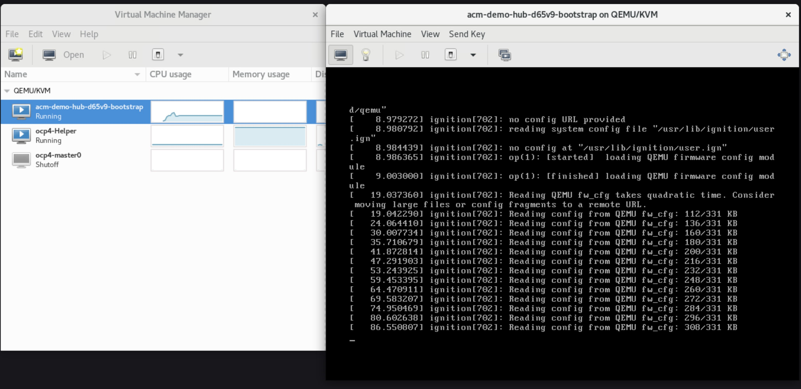
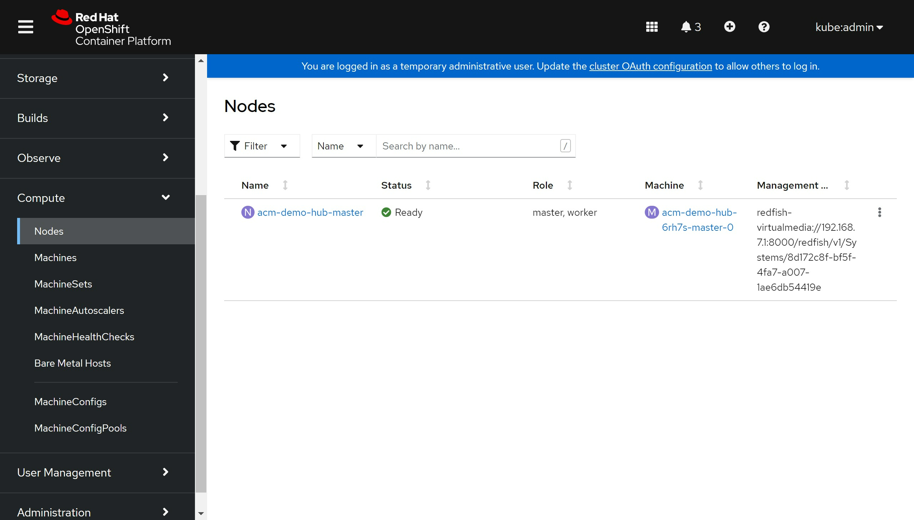
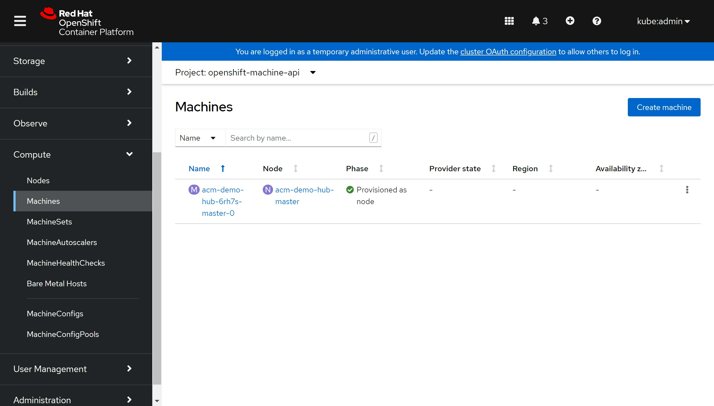
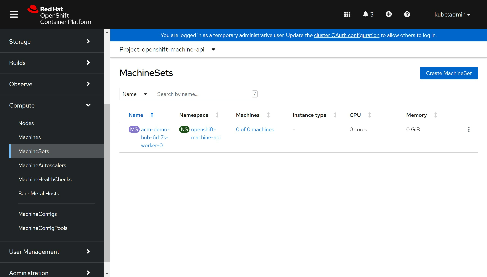
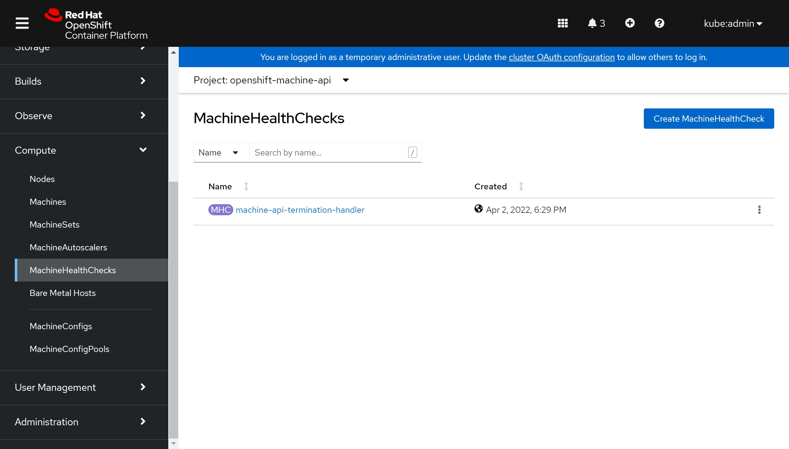
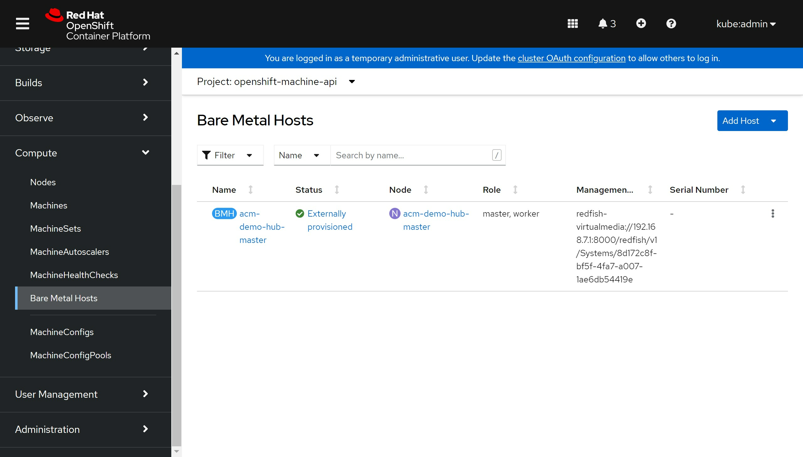

openshift 4.10 离线 baremetal IPI (全自动)安装 单网络 静态IP模式
简介
本文描述ocp4.10在baremetal(kvm模拟)上面，IPI (全自动)安装。由于4.10支持nmstat，所以他原生支持静态IP安装了。
根据openshift文档，baremetal IPI安装有两种模式，一种是provisioning网络独立，另外一种是provisioning网络和baremetal(服务)网络合并的模式。考虑到POC现场的环境，本次实验，使用简单的网络部署，也就是合并的网络模式。
以下是本次实验的架构图:

注意：本文使用single node (sno) 模式，并使用 IPI (全自动) 安装，这种模式官方是不支持的，我们这么做，是为了后续的ACM zero touch provision 实验， ZTP实验，需要ACM hub集群是IPI模式安装，而我们做实验资源紧张，所以我们搞了一个sno with IPI 模式的安装步骤。本文中有一些手动执行的步骤，都是因为官方IPI不支持sno，我们需要做一些小小的patch操作。
离线安装包下载
打包好的安装包，在这里下载，百度盘下载链接，版本是4.10.4:
链接：https://pan.baidu.com/s/16H8goM8AQ5ASXXPsWT4GAg?pwd=426x 提取码：426x
其中包括如下类型的文件：
- ocp4.tgz 这个文件包含了iso等安装介质，以及各种安装脚本，全部下载的镜像列表等。需要复制到宿主机，以及工具机上去。
- registry.tgz 这个文件也是docker image registry的仓库打包文件。需要先补充镜像的话，按照这里操作: 4.6.add.image.md
- nexus-image.tgz 这个是nexus的镜像仓库打包，集群的镜像proxy指向nexus，由nexus提供镜像的cache
- poc.image.tgz 这个是给registry.tgz补充的一些镜像，主要是ccn使用，补充的镜像列表在这里 poc.image.list ，按照这里操作: 4.6.add.image.md
合并这些切分文件，使用类似如下的命令
cat registry.?? > registry.tgz注意，可能需要更新离线镜像包中的helper用的ansible脚本。
在外网云主机上面准备离线安装源
准备离线安装介质的文档，已经转移到了这里：4.10.build.dist.md
前期准备，主要在宿主机上
本次实验，是在一个24C， 128G 的主机上面，用很多个虚拟机安装测试。所以先准备这个宿主机。
如果是多台宿主机，记得一定要调整时间配置，让这些宿主机的时间基本一致，否则证书会出问题。
主要的准备工作有
- 配置yum源
- 配置dns
- 安装镜像仓库
- 配置vnc环境
- 配置kvm需要的网络
- 创建helper kvm
以上准备工作，dns部分需要根据实际项目环境有所调整。
本次的宿主机是一台rhel8, 参考这里进行离线repo等基本的配置rhel8.build.kernel.repo.cache.md
cat << EOF > /root/.ssh/config
StrictHostKeyChecking no
UserKnownHostsFile=/dev/null
EOF
cat << EOF >> /etc/hosts
127.0.0.1 registry.ocp4.redhat.ren nexus.ocp4.redhat.ren git.ocp4.redhat.ren
EOF
dnf clean all
dnf repolist
dnf -y install byobu htop jq ipmitool
systemctl disable --now firewalld
# 配置registry
mkdir -p /etc/crts/ && cd /etc/crts
# https://access.redhat.com/documentation/en-us/red_hat_codeready_workspaces/2.1/html/installation_guide/installing-codeready-workspaces-in-tls-mode-with-self-signed-certificates_crw
openssl genrsa -out /etc/crts/redhat.ren.ca.key 4096
openssl req -x509 \
-new -nodes \
-key /etc/crts/redhat.ren.ca.key \
-sha256 \
-days 36500 \
-out /etc/crts/redhat.ren.ca.crt \
-subj /CN="Local Red Hat Ren Signer" \
-reqexts SAN \
-extensions SAN \
-config <(cat /etc/pki/tls/openssl.cnf \
<(printf '[SAN]\nbasicConstraints=critical, CA:TRUE\nkeyUsage=keyCertSign, cRLSign, digitalSignature'))
openssl genrsa -out /etc/crts/redhat.ren.key 2048
openssl req -new -sha256 \
-key /etc/crts/redhat.ren.key \
-subj "/O=Local Red Hat Ren /CN=*.ocp4.redhat.ren" \
-reqexts SAN \
-config <(cat /etc/pki/tls/openssl.cnf \
<(printf "\n[SAN]\nsubjectAltName=DNS:*.ocp4.redhat.ren,DNS:*.apps.ocp4.redhat.ren,DNS:*.redhat.ren\nbasicConstraints=critical, CA:FALSE\nkeyUsage=digitalSignature, keyEncipherment, keyAgreement, dataEncipherment\nextendedKeyUsage=serverAuth")) \
-out /etc/crts/redhat.ren.csr
openssl x509 \
-req \
-sha256 \
-extfile <(printf "subjectAltName=DNS:*.ocp4.redhat.ren,DNS:*.apps.ocp4.redhat.ren,DNS:*.redhat.ren\nbasicConstraints=critical, CA:FALSE\nkeyUsage=digitalSignature, keyEncipherment, keyAgreement, dataEncipherment\nextendedKeyUsage=serverAuth") \
-days 36500 \
-in /etc/crts/redhat.ren.csr \
-CA /etc/crts/redhat.ren.ca.crt \
-CAkey /etc/crts/redhat.ren.ca.key \
-CAcreateserial -out /etc/crts/redhat.ren.crt
openssl x509 -in /etc/crts/redhat.ren.crt -text
/bin/cp -f /etc/crts/redhat.ren.ca.crt /etc/pki/ca-trust/source/anchors/
update-ca-trust extract配置镜像仓库
这里是旧的，使用docker registry的配置镜像仓库的方法，如果想配置quay，可以参考这里 。
cd /data
mkdir -p /data/registry
# tar zxf registry.tgz
dnf -y install podman pigz skopeo jq
# pigz -dc registry.tgz | tar xf -
cd /data/ocp4
podman load -i /data/ocp4/registry.tgz
podman run --name local-registry -p 5443:5000 \
-d --restart=always \
-v /data/registry/:/var/lib/registry:z \
-v /etc/crts:/certs:z \
-e REGISTRY_HTTP_TLS_CERTIFICATE=/certs/redhat.ren.crt \
-e REGISTRY_HTTP_TLS_KEY=/certs/redhat.ren.key \
docker.io/library/registry:2
podman start local-registry
# firewall-cmd --permanent --add-port=5443/tcp
# firewall-cmd --reload
# 加载更多的镜像
# 解压缩 ocp4.tgz
bash add.image.load.sh /data/install.image 'registry.ocp4.redhat.ren:5443'
# https://github.com/christianh814/ocp4-upi-helpernode/blob/master/docs/quickstart.md
oc image mirror -a /data/registry.auth.json --from-dir=/data/file.registry/ 'file://openshift/release:4.10.4-x86_64*' quaylab.infra.redhat.ren/ocp4/openshift4准备vnc环境
vncpasswd
cat << EOF > ~/.vnc/config
session=gnome
securitytypes=vncauth,tlsvnc
desktop=sandbox
geometry=1440x855
alwaysshared
EOF
cat << EOF >> /etc/tigervnc/vncserver.users
:1=root
EOF
systemctl start vncserver@:1
# 如果你想停掉vnc server，这么做
systemctl stop vncserver@:1
# firewall-cmd --permanent --add-port=6001/tcp
# firewall-cmd --permanent --add-port=5901/tcp
# firewall-cmd --reload
# connect vnc at port 5901
# export DISPLAY=:1创建实验用虚拟网络
cat << 'EOF' > /data/kvm/bridge.sh
#!/usr/bin/env bash
PUB_CONN='eno1'
PUB_IP='172.21.6.105/24'
PUB_GW='172.21.6.254'
PUB_DNS='172.21.1.1'
nmcli con down "$PUB_CONN"
nmcli con delete "$PUB_CONN"
nmcli con down baremetal
nmcli con delete baremetal
# RHEL 8.1 appends the word "System" in front of the connection,delete in case it exists
nmcli con down "System $PUB_CONN"
nmcli con delete "System $PUB_CONN"
nmcli connection add ifname baremetal type bridge con-name baremetal ipv4.method 'manual' \
ipv4.address "$PUB_IP" \
ipv4.gateway "$PUB_GW" \
ipv4.dns "$PUB_DNS"
nmcli con add type bridge-slave ifname "$PUB_CONN" master baremetal
nmcli con down "$PUB_CONN";pkill dhclient;dhclient baremetal
nmcli con up baremetal
EOF
nmcli con mod baremetal +ipv4.address '192.168.7.1/24'
nmcli networking off; nmcli networking on创建工具机
mkdir -p /data/kvm
cd /data/kvm
lvremove -f rhel/helperlv
lvcreate -y -L 200G -n helperlv rhel
virt-install --name="ocp4-aHelper" --vcpus=2 --ram=4096 \
--disk path=/dev/rhel/helperlv,device=disk,bus=virtio,format=raw \
--os-variant rhel8.0 --network bridge=baremetal,model=virtio \
--boot menu=on --location /data/kvm/rhel-8.3-x86_64-dvd.iso \
--initrd-inject helper-ks-rhel8-ipi.cfg --extra-args "inst.ks=file:/helper-ks-rhel8-ipi.cfg"
virsh start ocp4-aHelper
# DO NOT USE, restore kvm
virsh destroy ocp4-aHelper
virsh undefine ocp4-aHelper
# virt-viewer --domain-name ocp4-aHelper
# virsh start ocp4-aHelper
# virsh list --all配置时间服务
# start chrony/ntp server on host
/bin/cp -f /etc/chrony.conf /etc/chrony.conf.default
cat << EOF > /etc/chrony.conf
# pool 2.rhel.pool.ntp.org iburst
driftfile /var/lib/chrony/drift
makestep 1.0 3
rtcsync
allow 192.0.0.0/8
local stratum 10
logdir /var/log/chrony
EOF
systemctl enable --now chronyd
# systemctl restart chronyd
chronyc tracking
chronyc sources -v
chronyc sourcestats -v
chronyc makestep
# setup ftp data root
mount --bind /data/dnf /var/ftp/dnf
chcon -R -t public_content_t /var/ftp/dnf在helper上配置静态变量
在 helper / 工具机上，配置静态变量。这些变量，将帮助配置工作可以在不同项目之间复用。后续也许可以考虑把相关的脚本，放到ansible项目里面去。
# on helper define static parameter
NODE_SSH_KEY="$(cat ~/.ssh/id_rsa.pub)"
INSTALL_IMAGE_REGISTRY=quaylab.infra.redhat.ren
PULL_SECRET='{"auths":{"registry.redhat.io": {"auth": "ZHVtbXk6ZHVtbXk=","email": "noemail@localhost"},"registry.ocp4.redhat.ren:5443": {"auth": "ZHVtbXk6ZHVtbXk=","email": "noemail@localhost"},"'${INSTALL_IMAGE_REGISTRY}'": {"auth": "'$( echo -n 'quayadmin:password' | openssl base64 )'","email": "noemail@localhost"}}}'
NTP_SERVER=192.168.7.1
HELP_SERVER=192.168.7.11
KVM_HOST=192.168.7.1
API_VIP=192.168.7.100
INGRESS_VIP=192.168.7.101
CLUSTER_PROVISION_IP=192.168.7.103
BOOTSTRAP_IP=192.168.7.12
ACM_DEMO_MNGED_CLUSTER=acm-demo1
ACM_DEMO_MNGED_SNO_IP=192.168.7.15
echo $PULL_SECRET
# 定义单节点集群的节点信息
SNO_CLUSTER_NAME=acm-demo-hub
SNO_BASE_DOMAIN=redhat.ren
SNO_IP=192.168.7.13
SNO_GW=192.168.7.1
SNO_NETMAST=255.255.255.0
SNO_NETMAST_S=24
SNO_HOSTNAME=acm-demo-hub-master
SNO_IF=enp1s0
SNO_IF_MAC=`printf '00:60:2F:%02X:%02X:%02X' $[RANDOM%256] $[RANDOM%256] $[RANDOM%256]`
SNO_DNS=192.168.7.11
SNO_DISK=/dev/vda
SNO_CORE_PWD=redhat
echo ${SNO_IF_MAC} > /data/sno/sno.mac创建openshift4集群节点vm模板
# back to kvm host
# create the master and worker vm, but not start them
export KVM_DIRECTORY=/data/kvm
mkdir -p ${KVM_DIRECTORY}
cd ${KVM_DIRECTORY}
# scp root@192.168.7.11:/data/install/*.iso ${KVM_DIRECTORY}/
scp root@192.168.7.11:/data/sno/sno.mac ${KVM_DIRECTORY}/
remove_lv() {
var_vg=$1
var_lv=$2
lvremove -f $var_vg/$var_lv
}
create_lv() {
var_vg=$1
var_lv=$2
lvcreate -y -L 120G -n $var_lv $var_vg
wipefs --all --force /dev/$var_vg/$var_lv
}
remove_lv vgdata lvacmdemo1
# remove_lv vgdata lvbootstrap
# remove_lv vgdata lvdata01
# remove_lv vgdata lvdata02
remove_lv vgdata lvmaster0
# remove_lv vgdata lvsno
# create_lv rhel bootstraplv
create_lv vgdata lvmaster0
virt-install --name=ocp4-master0 --vcpus=16 --ram=49152 \
--cpu=host-model \
--disk path=/dev/vgdata/lvmaster0,device=disk,bus=virtio,format=raw \
--os-variant rhel8.0 --network bridge=baremetal,model=virtio,mac=$(<sno.mac) \
--boot uefi,nvram_template=/usr/share/OVMF/OVMF_VARS.fd,menu=on \
--print-xml > ${KVM_DIRECTORY}/ocp4-master0.xml
virsh define --file ${KVM_DIRECTORY}/ocp4-master0.xml
# --boot uefi,nvram_template=/usr/share/OVMF/OVMF_VARS.fd,menu=on \
# --boot hd,cdrom,menu=on \
cd /data/kvm/
# for i in master{0..2} worker{0..2}
for i in master{0..0}
do
echo -ne "${i}\t" ;
virsh dumpxml ocp4-${i} | grep "mac address" | cut -d\' -f2 | tr '\n' '\t'
echo
done > mac.list
cat /data/kvm/mac.list
# master0 00:60:2f:86:fc:ba
# GOTO image registry & kvm host
# copy crt files to helper node
ssh-copy-id root@192.168.7.11
ssh root@192.168.7.11 mkdir -p /data/install
ssh root@192.168.7.11 mkdir -p /data/ocp4
ssh root@192.168.7.11 mkdir -p /etc/crts
scp /data/down/ocp4.tgz root@192.168.7.11:/data/
rsync -e ssh --info=progress2 -P --delete -arz /data/ocp4/ 192.168.7.11:/data/ocp4/
# scp /etc/crts/redhat.ren.ca.crt root@192.168.7.11:/data/install/
scp /etc/crts/redhat.ren.ca.crt root@192.168.7.11:/etc/crts/
scp /data/kvm/mac.list root@192.168.7.11:/data/install/配置redfish模拟
# install redfish for kvm
# https://access.redhat.com/solutions/4315581
# https://access.redhat.com/solutions/3057171
# https://docs.openstack.org/virtualbmc/latest/user/index.html
# https://docs.openstack.org/sushy-tools/latest/user/dynamic-emulator.html
dnf -y install python3-pip
# pip3 install --user sushy-tools
mkdir -p /data/install
cd /data/install
# podman create --name swap docker.io/wangzheng422/imgs:openshift-baremetal-install-4.6.5 ls
# podman cp swap:/openshift-baremetal-install ./
# podman rm -fv swap
# quay.io/wangzheng422/qimgs:ocp.bm.ipi.python.dep.rhel8-4.6.7
podman create --name swap quay.io/wangzheng422/qimgs:ocp.bm.ipi.python.dep.rhel8-4.10.4 ls
podman cp swap:/wheelhouse.tar.gz - > wheelhouse.tar.gz.tar
tar xvf wheelhouse.tar.gz.tar
tar zvxf wheelhouse.tar.gz
podman rm -fv swap
dnf groupinstall -y 'Development Tools'
dnf -y install python3-pip libvirt libvirt-devel python3-devel openssl-devel
pip3 install --user --no-index --find-links wheelhouse setuptools-rust
# export CRYPTOGRAPHY_DONT_BUILD_RUST=1
dnf install -y rust cargo
pip3 install --user -r wheelhouse/requirements.txt --no-index --find-links wheelhouse
/root/.local/bin/sushy-emulator -i 0.0.0.0 --ssl-certificate /etc/crts/redhat.ren.crt --ssl-key /etc/crts/redhat.ren.key
# curl https://registry.ocp4.redhat.ren:8000/redfish/v1/Systems/
# DO NOT USE, restore
# if you want to stop or delete vm, try this
virsh list --all
# virsh destroy ocp4-bootstrap
virsh destroy ocp4-master0
# virsh destroy ocp4-master1
# virsh destroy ocp4-master2
# virsh destroy ocp4-worker0
# virsh destroy ocp4-worker1
# virsh destroy ocp4-worker2
# virsh undefine ocp4-bootstrap
virsh undefine ocp4-master0 --nvram
# virsh undefine ocp4-master1 --nvram
# virsh undefine ocp4-master2 --nvram
# virsh undefine ocp4-worker0 --nvram
# virsh undefine ocp4-worker1 --nvram
# virsh undefine ocp4-worker2 --nvram工具机上的准备工作
以下是在工具机里面，进行的安装操作。
主要的操作有
- 配置yum源
- 运行ansible脚本，自动配置工具机
- 上传定制的安装配置文件
- 生成ignition文件
工具机的基础配置
sed -i 's/#UseDNS yes/UseDNS no/g' /etc/ssh/sshd_config
systemctl restart sshd
cat << EOF > /root/.ssh/config
StrictHostKeyChecking no
UserKnownHostsFile=/dev/null
EOF
systemctl disable --now firewalld
# in helper node
mkdir /etc/yum.repos.d.bak
mv /etc/yum.repos.d/* /etc/yum.repos.d.bak
export YUMIP="192.168.7.1"
cat << EOF > /etc/yum.repos.d/remote.repo
[remote-epel]
name=epel
baseurl=ftp://${YUMIP}/dnf/epel
enabled=1
gpgcheck=0
[remote-epel-modular]
name=epel-modular
baseurl=ftp://${YUMIP}/dnf/epel-modular
enabled=1
gpgcheck=0
[remote-appstream]
name=appstream
baseurl=ftp://${YUMIP}/dnf/rhel-8-for-x86_64-appstream-rpms
enabled=1
gpgcheck=0
[remote-baseos]
name=baseos
baseurl=ftp://${YUMIP}/dnf/rhel-8-for-x86_64-baseos-rpms
enabled=1
gpgcheck=0
[remote-baseos-source]
name=baseos-source
baseurl=ftp://${YUMIP}/dnf/rhel-8-for-x86_64-baseos-source-rpms
enabled=1
gpgcheck=0
[remote-supplementary]
name=supplementary
baseurl=ftp://${YUMIP}/dnf/rhel-8-for-x86_64-supplementary-rpms
enabled=1
gpgcheck=0
[remote-codeready-builder]
name=supplementary
baseurl=ftp://${YUMIP}/dnf/codeready-builder-for-rhel-8-x86_64-rpms
enabled=1
gpgcheck=0
EOF
yum clean all
yum makecache
yum repolist
yum -y install ansible git unzip podman python3
yum -y update
reboot
# yum -y install ansible git unzip podman python36准备 openshift 的定制化 ansible 安装工具
mkdir -p /data/ocp4/
# scp ocp4.tgz to /data
# scp /data/down/ocp4.tgz root@192.168.7.11:/data/
cd /data
tar zvxf ocp4.tgz
cd /data/ocp4
# 这里使用了一个ansible的项目，用来部署helper节点的服务。
# https://github.com/wangzheng422/ocp4-upi-helpernode
unzip ocp4-upi-helpernode.zip
# 这里使用了一个ignition文件合并的项目，用来帮助自定义ignition文件。
# https://github.com/wangzheng422/filetranspiler
podman load -i filetranspiler.tgz
mkdir -p /data/install
# on helper
mkdir -p /data/ocp4/
cd /data/ocp4/
cat << EOF > redfish.sh
#!/usr/bin/env bash
curl -k -s https://${KVM_HOST}:8000/redfish/v1/Systems/ | jq -r '.Members[]."@odata.id"' > list
while read -r line; do
curl -k -s https://${KVM_HOST}:8000/\$line | jq -j '.Id, " ", .Name, "\n" '
done < list
EOF
bash redfish.sh > /data/install/vm.list
cat /data/install/vm.list
# 1bc0116f-d376-45e2-b28c-d6b4b772b2bf ocp4-master0
# e70f66bc-7878-4617-811d-89cdaf62cc8c ocp4-Helper
# 配置ansible脚本的参数，注意修改里面的静态参数
cat << EOF > /data/ocp4/ocp4-upi-helpernode-master/vars.yaml
---
ocp_version: 4.10.4
ssh_gen_key: false
staticips: true
bm_ipi: true
firewalld: false
dns_forward: true
iso:
iso_dl_url: "file:///data/ocp4/rhcos-live.x86_64.iso"
my_iso: "rhcos-live.iso"
helper:
name: "helper"
ipaddr: "${HELP_SERVER}"
networkifacename: "enp1s0"
gateway: "${SNO_GW}"
netmask: "${SNO_NETMAST}"
dns:
domain: "redhat.ren"
clusterid: "ocp4"
forwarder1: "172.21.1.1"
forwarder2: "172.21.1.1"
api_vip: "${API_VIP}"
ingress_vip: "${INGRESS_VIP}"
bootstrap:
name: "bootstrap"
ipaddr: "${BOOTSTRAP_IP}"
interface: "enp1s0"
install_drive: "vda"
masters:
- name: "master-0"
ipaddr: "192.168.7.13"
interface: "enp1s0"
install_drive: "vda"
others:
- name: "registry"
ipaddr: "192.168.7.103"
- name: "yum"
ipaddr: "172.21.6.103"
- name: "quay"
ipaddr: "172.21.6.103"
- name: "nexus"
ipaddr: "172.21.6.103"
- name: "git"
ipaddr: "172.21.6.103"
otherdomains:
- domain: "infra.redhat.ren"
hosts:
- name: "registry"
ipaddr: "192.168.7.1"
- name: "yum"
ipaddr: "192.168.7.1"
- name: "quay"
ipaddr: "192.168.7.1"
- name: "quaylab"
ipaddr: "192.168.7.1"
- name: "nexus"
ipaddr: "192.168.7.1"
- name: "git"
ipaddr: "192.168.7.1"
- domain: "${ACM_DEMO_MNGED_CLUSTER}.${SNO_BASE_DOMAIN}"
hosts:
- name: "api"
ipaddr: "${ACM_DEMO_MNGED_SNO_IP}"
- name: "api-int"
ipaddr: "${ACM_DEMO_MNGED_SNO_IP}"
- name: "${ACM_DEMO_MNGED_CLUSTER}-master"
ipaddr: "${ACM_DEMO_MNGED_SNO_IP}"
- name: "*.apps"
ipaddr: "${ACM_DEMO_MNGED_SNO_IP}"
- domain: "${SNO_CLUSTER_NAME}.${SNO_BASE_DOMAIN}"
hosts:
- name: "api"
ipaddr: "${SNO_IP}"
- name: "api-int"
ipaddr: "${SNO_IP}"
- name: "${SNO_CLUSTER_NAME}-master"
ipaddr: "${SNO_IP}"
- name: "*.apps"
ipaddr: "${SNO_IP}"
force_ocp_download: false
remove_old_config_files: false
ocp_client: "file:///data/ocp4/{{ ocp_version }}/openshift-client-linux-{{ ocp_version }}.tar.gz"
ocp_installer: "file:///data/ocp4/{{ ocp_version }}/openshift-install-linux-{{ ocp_version }}.tar.gz"
ppc64le: false
arch: 'x86_64'
chronyconfig:
enabled: true
content:
- server: "${NTP_SERVER}"
options: iburst
setup_registry: # don't worry about this, just leave it here
deploy: false
registry_image: docker.io/library/registry:2
local_repo: "ocp4/openshift4"
product_repo: "openshift-release-dev"
release_name: "ocp-release"
release_tag: "4.6.1-x86_64"
ocp_filetranspiler: "file:///data/ocp4/filetranspiler.tgz"
EOF
# 接下来，我们使用ansible来配置helper节点，装上各种openshift集群需要的服务
# 根据现场环境，修改 ocp4-upi-helpernode-master/vars-static.yaml
cd /data/ocp4/ocp4-upi-helpernode-master
ansible-playbook -e @vars.yaml -e '{ staticips: true, bm_ipi: true }' tasks/main.yml
# generate image registry proxy related config
cd /data/ocp4
bash image.registries.conf.sh nexus.ocp4.redhat.ren:8083
# try this:
/usr/local/bin/helpernodecheck
mkdir -p /data/install
# GO back to help node
# apply registry's CA
/bin/cp -f /etc/crts/redhat.ren.ca.crt /etc/pki/ca-trust/source/anchors/
update-ca-trust extract配置 ignition 点火配置文件
openshift4安装的关键，就是ignition文件，更准确的说，是rhcos的点火配置文件，所有项目现场想做的定制，都在ignition文件里面。
rhcos就是一个rhel，所有你想要的定制化，都可以写成配置文件和脚本，加到ignition文件中去。但是，openshift4在安装过程中，至少要重启3次，我们的ignition文件中的配置，更多的是影响第一次启动，而之后的启动，rhcos会根据自身的升级机制，使用新的ignition去启动，这个新的ignition文件在哪里？怎么影响这个igntion文件的生成？作者现在也还在探索中，但是大致的方向是定制 /opt/openshift/openshift/ 下面的machine config yaml文件，把machine config写进去。
# on helper
# 根据现场环境，修改 install-config.yaml
# 至少要修改ssh key， 还有 additionalTrustBundle，这个是镜像仓库的csr
# copy your pull secret file into helper
# SEC_FILE='/data/pull-secret.json'
# cat << 'EOF' > $SEC_FILE
# 定制ignition
mkdir -p /data/install
cd /data/install
# vi install-config.yaml
cat << EOF > /data/install/install-config.yaml
apiVersion: v1
baseDomain: ${SNO_BASE_DOMAIN}
# bootMode: legacy
platform:
baremetal:
apiVIP: ${API_VIP}
ingressVIP: ${INGRESS_VIP}
bootstrapProvisioningIP: ${BOOTSTRAP_IP}
clusterProvisioningIP: ${CLUSTER_PROVISION_IP}
provisioningNetwork: "Disabled"
externalBridge: baremetal
bootstrapOSImage: http://${HELP_SERVER}:8080/install/rhcos-qemu.x86_64.qcow2.gz?sha256=$(zcat /var/www/html/install/rhcos-qemu.x86_64.qcow2.gz | sha256sum | awk '{print $1}')
clusterOSImage: http://${HELP_SERVER}:8080/install/rhcos-openstack.x86_64.qcow2.gz?sha256=$(zcat /var/www/html/install/rhcos-openstack.x86_64.qcow2.gz | sha256sum | awk '{print $1}')
hosts:
- name: ${SNO_HOSTNAME}
role: master
bmc:
address: redfish-virtualmedia://${KVM_HOST}:8000/redfish/v1/Systems/$(cat vm.list | grep master0 | awk '{print $1}')
username: admin
password: password
disableCertificateVerification: True
bootMACAddress: $(cat mac.list | grep master0 | awk '{print $2}')
rootDeviceHints:
deviceName: "${SNO_DISK}"
networkConfig:
dns-resolver:
config:
server:
- ${SNO_DNS}
interfaces:
- ipv4:
address:
- ip: ${SNO_IP}
prefix-length: ${SNO_NETMAST_S}
# - ip: ${API_VIP}
# prefix-length: 32
# - ip: ${INGRESS_VIP}
# prefix-length: 32
# - ip: ${CLUSTER_PROVISION_IP}
# prefix-length: 32
dhcp: false
enabled: true
name: ${SNO_IF}
state: up
type: ethernet
routes:
config:
- destination: 0.0.0.0/0
next-hop-address: ${SNO_GW}
next-hop-interface: ${SNO_IF}
table-id: 254
metadata:
name: ${SNO_CLUSTER_NAME}
networking:
clusterNetworks:
- cidr: 10.254.0.0/16
hostPrefix: 24
networkType: OpenShiftSDN
serviceNetwork:
- 172.30.0.0/16
machineCIDR: 192.168.7.0/24
compute:
- name: worker
replicas: 0
controlPlane:
name: master
replicas: 1
platform:
baremetal: {}
pullSecret: '${PULL_SECRET}'
sshKey: |
$( cat /root/.ssh/id_rsa.pub | sed 's/^/ /g' )
additionalTrustBundle: |
$( cat /etc/crts/redhat.ren.ca.crt | sed 's/^/ /g' )
imageContentSources:
- mirrors:
- ${INSTALL_IMAGE_REGISTRY}/ocp4/openshift4
source: quay.io/openshift-release-dev/ocp-release
- mirrors:
- ${INSTALL_IMAGE_REGISTRY}/ocp4/openshift4
source: quay.io/openshift-release-dev/ocp-v4.0-art-dev
EOF在宿主机上开始安装
将配置文件复制到宿主机上
# GO back to host
mkdir -p /data/install
cd /data/install
/bin/rm -rf .openshift_install.log .openshift_install_state.json terraform* auth tls *
scp root@192.168.7.11:/data/install/install-config.yaml /data/install/
cd /data/install
for i in $(sudo virsh list --all | tail -n +3 | grep bootstrap | awk {'print $2'});
do
sudo virsh destroy $i;
sudo virsh undefine $i;
sudo virsh vol-delete $i --pool default;
sudo virsh vol-delete $i.ign --pool default;
virsh pool-destroy $i
virsh pool-delete $i
virsh pool-undefine $i
done从ignition点火配置文件创建安装配置文件
export BUILDNUMBER=4.10.4
/data/ocp4/${BUILDNUMBER}/openshift-baremetal-install --dir /data/install/ create manifests
# copy ntp related config
scp root@192.168.7.11:/data/ocp4/ocp4-upi-helpernode-master/machineconfig/* /data/install/openshift/
# /bin/cp -f /data/ocp4/image.registries.conf /etc/containers/registries.conf.d/
scp root@192.168.7.11:/data/ocp4/99-worker-container-registries.yaml /data/install/openshift
scp root@192.168.7.11:/data/ocp4/99-master-container-registries.yaml /data/install/openshift
# /data/ocp4/${BUILDNUMBER}/openshift-baremetal-install --dir /data/install/ --log-level debug create cluster
/data/ocp4/${BUILDNUMBER}/openshift-baremetal-install --dir /data/install/ create ignition-configs定制 bootstrap 的 ignition 点火配置文件
mkdir -p /data/sno/disconnected/
# 定义单节点集群的节点信息
BTS_CLUSTER_NAME=ocp4s-ais
BTS_BASE_DOMAIN=redhat.ren
BTS_IP=192.168.7.12
BTS_GW=192.168.7.1
BTS_NETMAST=255.255.255.0
BTS_NETMAST_S=24
BTS_HOSTNAME=ocp4s-ais-bootstrap
# SNO_CON="Wired connection 1"
BTS_CON="ens3"
BTS_IF=ens3
BTS_DNS=192.168.7.11
BTS_DISK=/dev/vda
BTS_CORE_PWD=redhat
SNO_HOSTNAME=acm-demo-hub-master
cat << EOF > /data/sno/static.ip.bu
variant: openshift
version: 4.9.0
metadata:
labels:
machineconfiguration.openshift.io/role: master
name: 99-zzz-master-static-ip
storage:
files:
- path: /etc/NetworkManager/system-connections/${BTS_CON}.nmconnection
mode: 0600
overwrite: true
contents:
inline: |
[connection]
id=${BTS_IF}
# uuid=$(uuidgen)
type=ethernet
interface-name=${BTS_IF}
autoconnect=true
[ipv4]
address1=${BTS_IP}/${BTS_NETMAST_S=24},${BTS_GW}
dns=${BTS_DNS};
dns-search=
method=manual
[ipv6]
addr-gen-mode=eui64
dhcp-hostname=${BTS_HOSTNAME}
dhcp-timeout=90
dns-search=
method=disabled
[proxy]
EOF
# set static hostname for master
# only works for sno
# do not use this in 3-master cluster
# in 3-master cluster, use dhcp to set hostname instead.
cat << EOF > /data/sno/static.hostname.bu
variant: openshift
version: 4.9.0
metadata:
labels:
machineconfiguration.openshift.io/role: master
name: 99-zzz-master-static-hostname
storage:
files:
- path: /etc/hostname
mode: 0644
overwrite: true
contents:
inline: |
${SNO_HOSTNAME}
EOF
source /data/ocp4/acm.fn.sh
butane /data/sno/static.ip.bu > /data/sno/disconnected/99-zzz-bootstrap-ip.yaml
get_file_content_for_ignition "/opt/openshift/openshift/99-zzz-bootstrap-ip.yaml" "/data/sno/disconnected/99-zzz-bootstrap-ip.yaml"
VAR_99_master_bootstrap_ip=$RET_VAL
VAR_99_master_bootstrap_ip_2=$RET_VAL_2
butane /data/sno/static.hostname.bu > /data/sno/disconnected/99-zzz-master-static-hostname.yaml
get_file_content_for_ignition "/opt/openshift/openshift/99-zzz-master-static-hostname.yaml" "/data/sno/disconnected/99-zzz-master-static-hostname.yaml"
VAR_99_master_master_static_hostname=$RET_VAL
VAR_99_master_master_static_hostname_2=$RET_VAL_2
VAR_PWD_HASH="$(python3 -c 'import crypt,getpass; print(crypt.crypt("redhat"))')"
tmppath=$(mktemp)
cat /data/install/bootstrap.ign \
| jq --arg VAR "$VAR_PWD_HASH" --arg VAR_SSH "$NODE_SSH_KEY" '.passwd.users += [{ "name": "wzh", "system": true, "passwordHash": $VAR , "sshAuthorizedKeys": [ $VAR_SSH ], "groups": [ "adm", "wheel", "sudo", "systemd-journal" ] }]' \
| jq --argjson VAR "$VAR_99_master_bootstrap_ip_2" '.storage.files += [$VAR] ' \
| jq --argjson VAR "$VAR_99_master_master_static_hostname" '.storage.files += [$VAR] ' \
| jq -c . \
> ${tmppath}
/bin/cp -f ${tmppath} /data/install/bootstrap.ign
rm -f ${tmppath}开始 IPI 安装 openshift4
/data/ocp4/${BUILDNUMBER}/openshift-baremetal-install --dir /data/install/ --log-level debug create cluster安装自动开始，等2分钟以后，可以看到自动创建了一个bootstrap虚拟机

bootstrap运行一段时间后，会通过redfish，启动 master vm.
# we can login to the bootstrap by using username and password ( wzh/redhat ) in console
# or we can login using ssh
ssh core@192.168.7.12
# 在安装过程中，安装程序会检查master-0节点的hostname是不是localhost，不是的话等待网络配置
# 这个超时时间还有点长，等不及的话，登录到master-0节点上，直接用以下命令改一下
# hostnamectl set-hostname acm-demo-hub-master
# 在安装过程中，也许是bug，apiVIP, ingressVIP 无法漂移到master-0上正常加载
# 我们手动加上去就好了
# 这并不是一个bug，而是一个解决方案，因为IPI安装的设计，是要求3个master节点. 也许以后会内置支持吧。
# on master-0 kvm
nmcli con mod enp1s0 +ipv4.addresses 192.168.7.100/32
nmcli con mod enp1s0 +ipv4.addresses 192.168.7.101/32
nmcli con mod enp1s0 +ipv4.addresses 192.168.7.103/32
nmcli con up enp1s0
/data/ocp4/${BUILDNUMBER}/openshift-baremetal-install --dir /data/install/ wait-for bootstrap-complete --log-level debug
# DEBUG Bootstrap status: complete
# INFO It is now safe to remove the bootstrap resources
# DEBUG Time elapsed per stage:
# DEBUG Bootstrap Complete: 14s
# DEBUG API: 14s
# INFO Time elapsed: 14s
/data/ocp4/${BUILDNUMBER}/openshift-baremetal-install --dir /data/install/ wait-for install-complete --log-level debug
# INFO Install complete!
# INFO To access the cluster as the system:admin user when using 'oc', run 'export KUBECONFIG=/data/install/auth/kubeconfig'
# INFO Access the OpenShift web-console here: https://console-openshift-console.apps.acm-demo-hub.redhat.ren
# INFO Login to the console with user: "kubeadmin", and password: "FpbMV-zasXr-8xczB-SSuIy"
# DEBUG Time elapsed per stage:
# DEBUG Cluster Operators: 8m39s
# INFO Time elapsed: 8m39s
# on kvm host, copy back auth folder to helper node
rsync -arz /data/install/auth root@192.168.7.11:/data/install/
# Go back to helper
ansible localhost -m lineinfile -a 'path=$HOME/.bashrc regexp="^export KUBECONFIG" line="export KUBECONFIG=/data/install/auth/kubeconfig"'
source $HOME/.bashrc
oc get node
# NAME STATUS ROLES AGE VERSION
# acm-demo-hub-master Ready master,worker 143m v1.23.3+e419edf
oc get pod -n openshift-machine-api
# NAME READY STATUS RESTARTS AGE
# cluster-autoscaler-operator-86fb4975-ljssk 2/2 Running 8 137m
# cluster-baremetal-operator-5946dc9f9b-sksrh 2/2 Running 6 137m
# machine-api-controllers-9688d969d-qgn2j 7/7 Running 32 (34m ago) 135m
# machine-api-operator-568bb89984-s28kx 2/2 Running 6 137m
# metal3-d88947f6f-rbp9m 7/7 Running 24 (35m ago) 134m
# metal3-image-cache-vf548 1/1 Running 3 134m
# metal3-image-customization-577f886bb4-v7xg5 1/1 Running 3 134m
oc get all -n openshift-kni-infra
# NAME READY STATUS RESTARTS AGE
# pod/coredns-acm-demo-hub-master 2/2 Running 4 92m
# pod/haproxy-acm-demo-hub-master 2/2 Running 4 93m
# pod/keepalived-acm-demo-hub-master 2/2 Running 4 92m
oc get BareMetalHost -n openshift-machine-api
# NAME STATE CONSUMER ONLINE ERROR AGE
# acm-demo-hub-master externally provisioned acm-demo-hub-6rh7s-master-0 true 157m
oc get bmh -n openshift-machine-api
# NAME STATE CONSUMER ONLINE ERROR AGE
# acm-demo-hub-master externally provisioned acm-demo-hub-6rh7s-master-0 true 161m可以看到web console上node的配置指向了bm

我们也可以看到久违的machine配置

machine set 也有了

有了machine 自然 machine health check 也有了

有一个单独的 baremetal hosts 的页面也出来了

静态添加 vip for api_server, ingress
我们是定制的 SNO IPI，其实不需要 api server , ingress 的 vip， 所以我们就写死到节点的启动脚本中，把这些 vip 给静态加上。 但是默认 ipi 安装会有一个 keepalived static pod ， 启动的时候，会清除到这些vip，那么我们还要把这个 keepalived static pod 关掉，否则会导致 vip 不可用。
# on helper
cat << EOF > /data/install/wzh.script
#!/bin/bash
nmcli con mod enp1s0 +ipv4.addresses 192.168.7.100/32
nmcli con mod enp1s0 +ipv4.addresses 192.168.7.101/32
nmcli con mod enp1s0 +ipv4.addresses 192.168.7.103/32
nmcli con up enp1s0
EOF
var_local=$(cat /data/install/wzh.script | python3 -c "import sys, urllib.parse; print(urllib.parse.quote(''.join(sys.stdin.readlines())))" )
cat <<EOF > /data/install/45-master-wzh-service.yaml
apiVersion: machineconfiguration.openshift.io/v1
kind: MachineConfig
metadata:
labels:
machineconfiguration.openshift.io/role: master
name: 45-master-wzh-service
spec:
config:
ignition:
version: 3.2.0
storage:
files:
- contents:
source: data:text/plain,${var_local}
verification: {}
filesystem: root
mode: 0755
path: /etc/rc.d/wzh.local
- path: /etc/kubernetes/manifests/keepalived.yaml
contents:
source: data:text/plain,
verification: {}
filesystem: root
mode: 0644
overwrite: true
systemd:
units:
- name: wzh.service
enabled: true
contents: |
[Unit]
Description=/etc/rc.d/wzh.local Compatibility
ConditionFileIsExecutable=/etc/rc.d/wzh.local
After=network.target
[Service]
Type=oneshot
User=root
Group=root
ExecStart=/bin/bash -c /etc/rc.d/wzh.local
[Install]
WantedBy=multi-user.target
EOF
oc apply -f 45-master-wzh-service.yaml 安装后的操作
添加一个新节点（sno未验证）
IPI 模式下，添加一个新节点非常方便，只要定义一个BareMetalHost就好了。
cd /data/install/
cat << EOF > /data/install/bmh.yaml
---
apiVersion: v1
kind: Secret
metadata:
name: worker-2-bmc-secret
type: Opaque
data:
username: $(echo -ne "admin" | base64)
password: $(echo -ne "password" | base64)
---
apiVersion: metal3.io/v1alpha1
kind: BareMetalHost
metadata:
name: worker-2
spec:
online: true
bootMACAddress: $(cat mac.list | grep worker2 | awk '{print $2}')
bmc:
address: redfish-virtualmedia://192.168.7.1:8000/redfish/v1/Systems/$(cat vm.list | grep worker2 | awk '{print $1}')
credentialsName: worker-2-bmc-secret
disableCertificateVerification: true
rootDeviceHints:
deviceName: /dev/vda
EOF
oc -n openshift-machine-api create -f bmh.yaml
# DO NOT USE, restore, delete the vm
oc -n openshift-machine-api delete -f bmh.yaml
oc get bmh -n openshift-machine-api
# NAME STATUS PROVISIONING STATUS CONSUMER BMC HARDWARE PROFILE ONLINE ERROR
# master-0 OK externally provisioned ocp4-zn8lq-master-0 redfish-virtualmedia://192.168.7.1:8000/redfish/v1/Systems/965c420a-f127-4639-9184-fe3546d2bde4 true
# master-1 OK externally provisioned ocp4-zn8lq-master-1 redfish-virtualmedia://192.168.7.1:8000/redfish/v1/Systems/46f9dff4-1b44-4286-8a7c-691673340030 true
# master-2 OK externally provisioned ocp4-zn8lq-master-2 redfish-virtualmedia://192.168.7.1:8000/redfish/v1/Systems/9e544eb6-1b98-4b0a-ad32-7df232ae582a true
# worker-0 OK provisioned ocp4-zn8lq-worker-0-mv4d7 redfish-virtualmedia://192.168.7.1:8000/redfish/v1/Systems/c399c6b7-525a-4f4e-8280-0472b6494fc5 unknown true
# worker-1 OK provisioned ocp4-zn8lq-worker-0-9frt6 redfish-virtualmedia://192.168.7.1:8000/redfish/v1/Systems/a4052132-7598-4879-b3e1-c48c47cf67ed unknown true
# worker-2 OK inspecting redfish-virtualmedia://192.168.7.1:8000/redfish/v1/Systems/2eee2e57-e18b-460b-bb3f-7f048f84c69b true
oc get machinesets -n openshift-machine-api
# NAME DESIRED CURRENT READY AVAILABLE AGE
# ocp4-zn8lq-worker-0 2 2 2 2 155m
oc get machinesets -n openshift-machine-api -o json | jq -r .items[0].metadata.name
# 扩容worker到3副本，会触发worker-2的部署
oc scale --replicas=3 machineset $(oc get machinesets -n openshift-machine-api -o json | jq -r .items[0].metadata.name) -n openshift-machine-api镜像仓库代理 / image registry proxy
准备离线镜像仓库非常麻烦，好在我们找到了一台在线的主机，那么我们可以使用nexus构造image registry proxy，在在线环境上面，做一遍PoC，然后就能通过image registry proxy得到离线镜像了
- https://mtijhof.wordpress.com/2018/07/23/using-nexus-oss-as-a-proxy-cache-for-docker-images/
#####################################################
# init build the nexus fs
/bin/cp -f nexus-image.tgz /data/ccn/
tar zxf nexus-image.tgz
chown -R 200 /data/ccn/nexus-image
# podman run -d -p 8082:8081 -p 8083:8083 -it --name nexus-image -v /data/ccn/nexus-image:/nexus-data:Z docker.io/sonatype/nexus3:3.29.0
podman run -d -p 8082:8081 -p 8083:8083 -it --name nexus-image -v /data/ccn/nexus-image:/nexus-data:Z docker.io/wangzheng422/imgs:nexus3-3.29.0-wzh
podman stop nexus-image
podman rm nexus-image
# get the admin password
cat /data/ccn/nexus-image/admin.password && echo
# 84091bcd-c82f-44a3-8b7b-dfc90f5b7da1
# open http://nexus.ocp4.redhat.ren:8082
# 开启 https
# https://blog.csdn.net/s7799653/article/details/105378645
# https://help.sonatype.com/repomanager3/system-configuration/configuring-ssl#ConfiguringSSL-InboundSSL-ConfiguringtoServeContentviaHTTPS
mkdir -p /data/install/tmp
cd /data/install/tmp
# 将证书导出成pkcs格式
# 这里需要输入密码 用 password，
openssl pkcs12 -export -out keystore.pkcs12 -inkey /etc/crts/redhat.ren.key -in /etc/crts/redhat.ren.crt
cat << EOF >> Dockerfile
FROM docker.io/sonatype/nexus3:3.29.0
USER root
COPY keystore.pkcs12 /keystore.pkcs12
RUN keytool -v -importkeystore -srckeystore keystore.pkcs12 -srcstoretype PKCS12 -destkeystore keystore.jks -deststoretype JKS -storepass password -srcstorepass password &&\
cp keystore.jks /opt/sonatype/nexus/etc/ssl/
USER nexus
EOF
buildah bud --format=docker -t docker.io/wangzheng422/imgs:nexus3-3.29.0-wzh -f Dockerfile .
buildah push docker.io/wangzheng422/imgs:nexus3-3.29.0-wzh
######################################################
# go to helper, update proxy setting for ocp cluster
cd /data/ocp4
bash image.registries.conf.sh nexus.ocp4.redhat.ren:8083
mkdir -p /etc/containers/registries.conf.d
/bin/cp -f image.registries.conf /etc/containers/registries.conf.d/
cd /data/ocp4
oc apply -f ./99-worker-container-registries.yaml -n openshift-config
oc apply -f ./99-master-container-registries.yaml -n openshift-config
######################################################
# dump the nexus image fs out
podman stop nexus-image
var_date=$(date '+%Y-%m-%d-%H%M')
echo $var_date
cd /data/ccn
tar cf - ./nexus-image | pigz -c > nexus-image.tgz
buildah from --name onbuild-container scratch
buildah copy onbuild-container nexus-image.tgz /
buildah umount onbuild-container
buildah commit --rm --format=docker onbuild-container docker.io/wangzheng422/nexus-fs:image-$var_date
# buildah rm onbuild-container
# rm -f nexus-image.tgz
buildah push docker.io/wangzheng422/nexus-fs:image-$var_date
echo "docker.io/wangzheng422/nexus-fs:image-$var_date"
# 以下这个版本，可以作为初始化的image proxy，里面包含了nfs provision，以及sample operator的metadata。很高兴的发现，image stream并不会完全下载镜像，好想只是下载metadata，真正用的时候，才去下载。
# docker.io/wangzheng422/nexus-fs:image-2020-12-26-1118配置镜像仓库的ca
安装过程里面，已经把镜像仓库的ca放进去了，但是好想image stream不认，让我们再试试
oc project openshift-config
oc create configmap ca.for.registry -n openshift-config \
--from-file=registry.ocp4.redhat.ren..5443=/data/install/redhat.ren.ca.crt \
--from-file=nexus.ocp4.redhat.ren..8083=/data/install/redhat.ren.ca.crt
oc patch image.config.openshift.io/cluster -p '{"spec":{"additionalTrustedCA":{"name":"ca.for.registry"}}}' --type=merge
# oc patch image.config.openshift.io/cluster -p '{"spec":{"registrySources":{"insecureRegistries":["nexus.ocp4.redhat.ren:8083"]}}}' --type=merge
oc get image.config.openshift.io/cluster -o yaml
# openshift project下面的image stream重新加载一下把
oc get is -o json | jq -r '.items[].metadata.name' | xargs -L1 oc import-image --all 配置internal registry
我们的工具机是带nfs的，那么就给interneal registry配置高档一些的nfs存储吧，不要用emptydir
bash /data/ocp4/ocp4-upi-helpernode-master/files/nfs-provisioner-setup.sh
# oc edit configs.imageregistry.operator.openshift.io
# 修改 storage 部分
# storage:
# pvc:
# claim:
oc patch configs.imageregistry.operator.openshift.io cluster -p '{"spec":{"managementState": "Managed","storage":{"pvc":{"claim":""}}}}' --type=merge
oc patch configs.imageregistry.operator.openshift.io cluster -p '{"spec":{"managementState": "Removed"}}' --type=merge
oc get clusteroperator image-registry
oc get configs.imageregistry.operator.openshift.io cluster -o yaml
# 把imagepruner给停掉
# https://bugzilla.redhat.com/show_bug.cgi?id=1852501#c24
# oc patch imagepruner.imageregistry/cluster --patch '{"spec":{"suspend":true}}' --type=merge
# oc -n openshift-image-registry delete jobs --all配置sample operator
openshift内置了一个sample operator，里面有一大堆红帽的产品。
oc get configs.samples.operator.openshift.io/cluster -o yaml
oc patch configs.samples.operator.openshift.io/cluster -p '{"spec":{"managementState": "Managed", "samplesRegistry": "nexus.ocp4.redhat.ren:8083"}}' --type=merge
oc patch configs.samples.operator.openshift.io/cluster -p '{"spec":{"managementState": "Unmanaged"}}' --type=merge
oc patch configs.samples.operator.openshift.io/cluster -p '{"spec":{"managementState": "Removed"}}' --type=mergechrony/NTP 设置
在 ocp 4.6 里面，需要设定ntp同步，我们之前ansible脚本，已经创建好了ntp的mco配置，把他打到系统里面就好了。
oc apply -f /data/ocp4/ocp4-upi-helpernode-master/machineconfig/Operator Hub 离线安装
使用nexus作为image proxy以后，就不需要做这个离线操作了，但是如果我们想搞CCN这种项目，因为他自带了一个catalog，为了避免冲突，我们可能还是需要屏蔽到默认的operator hub
oc patch OperatorHub cluster --type json \
-p '[{"op": "add", "path": "/spec/disableAllDefaultSources", "value": true}]'
oc get OperatorHub cluster -o yaml给 openshift project image stream 打补丁
在有代理的网络环境中，我们需要给openshift project下的image stream打一些补丁。
cd /data/ocp4
bash is.patch.sh registry.ocp4.redhat.ren:5443/ocp4/openshift4给 router / ingress 更换证书
有时候，我们需要公网CA认证的证书，给router来用，那么我们就搞一下
https://docs.openshift.com/container-platform/4.6/security/certificates/replacing-default-ingress-certificate.html
mkdir -p /data/ccn/ingress-keys/etc
mkdir -p /data/ccn/ingress-keys/lib
cd /data/ccn/ingress-keys
podman run -it --rm --name certbot \
-v "/data/ccn/ingress-keys/etc:/etc/letsencrypt":Z \
-v "/data/ccn/ingress-keys/lib:/var/lib/letsencrypt":Z \
docker.io/certbot/certbot certonly -d "*.apps.ocp4.redhat.ren" --manual --preferred-challenges dns-01 --server https://acme-v02.api.letsencrypt.org/directory
cp ./etc/archive/apps.ocp4.redhat.ren/fullchain1.pem apps.ocp4.redhat.ren.crt
cp ./etc/archive/apps.ocp4.redhat.ren/privkey1.pem apps.ocp4.redhat.ren.key
ssh root@192.168.7.11 mkdir -p /data/install/ingress-key
scp apps.* root@192.168.7.11:/data/install/ingress-key
# on helper
cd /data/install/ingress-key
oc create secret tls wzh-ingress-key \
--cert=apps.ocp4.redhat.ren.crt \
--key=apps.ocp4.redhat.ren.key \
-n openshift-ingress
oc patch ingresscontroller.operator default \
--type=merge -p \
'{"spec":{"defaultCertificate": {"name": "wzh-ingress-key"}}}' \
-n openshift-ingress-operatorbuild the pip dependencies for rhel8
export BUILDNUMBER=4.10.4
dnf groupinstall -y 'Development Tools'
dnf -y install python3-pip libvirt libvirt-devel python3-devel
pip3 uninstall -y $(pip3 list --user --format=legacy | awk '{print $1}' | tr '\n' ' ' )
pip3 install --user setuptools-rust
pip3 install --user virtualbmc
pip3 install --user sushy-tools
pip3 freeze --user > requirements.txt
# pip3 install -r requirements.txt --user
mkdir -p wheelhouse
pip3 download -r requirements.txt -d wheelhouse
/bin/cp -f requirements.txt wheelhouse/
tar -zcf wheelhouse.tar.gz wheelhouse
buildah from --name onbuild-container scratch
buildah copy onbuild-container wheelhouse.tar.gz /
buildah umount onbuild-container
buildah commit --rm --format=docker onbuild-container quay.io/wangzheng422/qimgs:ocp.bm.ipi.python.dep.rhel8-${BUILDNUMBER}
# buildah rm onbuild-container
buildah push quay.io/wangzheng422/qimgs:ocp.bm.ipi.python.dep.rhel8-${BUILDNUMBER}
echo "quay.io/wangzheng422/qimgs:ocp.bm.ipi.python.dep.rhel8-${BUILDNUMBER}"
# quay.io/wangzheng422/qimgs:ocp.bm.ipi.python.dep.rhel8-4.10.4排错技巧
# login to bootstrap to debug
# find the ip from kvm console
ssh -i ~/.ssh/helper_rsa core@192.168.7.75
journalctl -b -f -u release-image.service -u bootkube.service
journalctl -b -u release-image.service -u bootkube.service | grep -i baremetal
sudo -i
export KUBECONFIG=/etc/kubernetes/kubeconfig
oc get pod -n openshift-machine-api
oc get BareMetalHost -n openshift-machine-api
# debug why bootstrap can't be ping...
cat .openshift_install_state.json | jq '."*bootstrap.Bootstrap"'.Config.storage.files[].path
cat .openshift_install_state.json | jq -r '."*bootstrap.Bootstrap"'.File.Data | base64 -d | jq -r . > ign.json
cat .openshift_install_state.json | jq -r '."*bootstrap.Bootstrap".Config.storage.files[].contents.source ' | sed 's/.*base64,//g' | base64 -d > decode
cat .openshift_install_state.json | jq -r '."*bootstrap.Bootstrap".Config.storage.files[] | .path, .contents.source ' | while read -r line ; do if [[ $line =~ .*base64,.* ]]; then echo $(echo $line | sed 's/.*base64,//g' | base64 -d) ; else echo $line; fi; done > files
cat bootstrap.ign | jq '.storage.files[] | select ( .path == "/opt/openshift/openshift/99_baremetal-provisioning-config.yaml" ) ' | jq -r .contents.source | sed 's/.*base64,//g' | base64 -d
cat bootstrap.ign | jq '.storage.files[] | select ( .path | contains("/opt/openshift/openshift/") ) ' | jq -r .contents.source | sed 's/.*base64,//g' | base64 -d